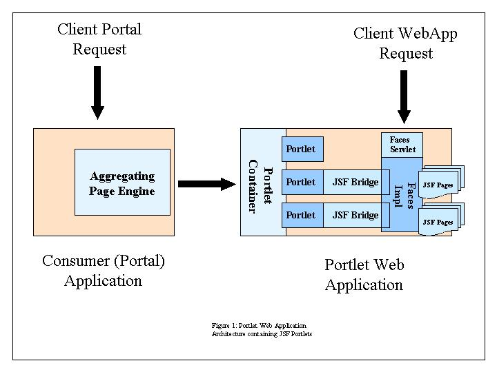

The Java™ Portlet Specification defines a set of APIs for directly implementing a portlet. A portlet bridge is a technology used by a portlet to bridge to an execution environment where differing abstractions are used for rendering markup or processing user interactions. Typically these are well-known, possibly standard web development environments. Examples include JavaServer™ Faces and Apache Struts.
The portlet bridge acts as the translation engine between the portlet environment and the targeted system. It expresses the portlet request context to the bridged environment, executes the request and transforms the response as appropriate for the portlet environment. It provides an abstraction of the portlet environment for the bridged environment, and for developers working within the bridged environment. These developers are freed to execute Faces views as portlets, without the need to understand the details of the portlet APIs and development model.
To put it simply, a portlet bridge is the technology that allows a Java web developer to execute views developed using other web programming abstractions as portlets without needing to know and or learn about portlet development, concepts, or APIs.
The Portlet Bridge for JavaServer™ Faces is the specific bridge technology needed to support this bridging behavior for JavaServer™ Faces.
In “ 2: Overview” of the The Java Portlet 2.0 Specification, a portlet is described as:
A portlet is an application that provides a specific piece of content (information or service) to be included as part of a portal page. It is managed by a portlet container, that processes requests and generates dynamic content. Portlets are used by portals as pluggable user interface components that provide a presentation layer to information systems.
The content generated by a portlet is also called a fragment. A fragment is a piece of markup (e.g. HTML, XHTML, WML) adhering to certain rules and can be aggregated with other fragments to form a complete document. The content of a portlet is normally aggregated with the content of other portlets to form the portal page. The lifecycle of a portlet is managed by the portlet container.
Web clients interact with portlets via a request/response paradigm implemented by the portal. Normally, users interact with content produced by portlets, for example by following links or submitting forms, resulting in portlet actions being received by the portal, which are forwarded by it to the portlets targeted by the user’s interactions.
The content generated by a portlet may vary from one user to another depending on the user configuration for the portlet.
The JavaServer Faces Specification (v1.2) describes itself as follows in its Overview chapter:
JavaServer Faces (JSF) is a user interface (UI) framework for Java web applications. It is designed to significantly ease the burden of writing and maintaining applications that run on a Java application server and render their UIs back to a target client. JSF provides ease-of use in the following ways:
Most importantly, JSF establishes standards which are designed to be leveraged by tools to provide a developer experience which is accessible to a wide variety of developer types, ranging from corporate developers to systems programmers. A “corporate developer” is characterized as an individual who is proficient in writing procedural code and business logic, but is not necessarily skilled in object-oriented programming. A “systems programmer” understands object-oriented fundamentals, including abstraction and designing for re-use. A corporate developer typically relies on tools for development, while a system programmer may define his or her tool as a text editor for writing code. Therefore, JSF is designed to be tooled, but also exposes the framework and programming model as APIs so that it can be used outside of tools, as is sometimes required by systems programmers.
The following diagram illustrates the architecture of a Java Portlet Application using the portlet bridge to execute Faces pages as the means of generating portlet fragments.

Java Portlet Application Architectural Diagram Depicting use of Faces Bridge
This diagram shows two entry points to the portlet web application. The entry point depicted on the right (Client WebApp Request) models the usual execution of a Faces application. The client makes a direct (browser/http) request to the web application to execute/present a Faces page. The FacesServlet receives this request and executes the targeted page.
The entry point depicted on the left (Client Portal Request) models the execution of the Faces application when it is accessed via a portlet running in the portlet container. In this case, the client sends its request to the consumer (portal) web application, which resolves the request to one of its pages, containing in part one or more portlets. The consumer portal executes a page engine that aggregates markup retrieved by multiple portlets defined within the portal page. The consumer portal executes and renders the aggregated portlet by making requests to the portlet containers that host the portlets. This request is modeled by the central arrow in the diagram. The portlet container resolves the consumer portal’s request and executes the targeted portlet according to the Java Portlet 2.0 APIs/specification.
For each portlet whose behavior is implemented using the Faces technology, the portlet activates and executes its own instance of the bridge by using the APIs defined in this specification. The bridge provides the intermediate that translates between portlet and JSF semantics. The portlet container and the Faces engine are loosely coupled through the portlet bridge - neither the portlet container, nor the Faces engine, is aware of the other.
For each request directed through the portlet bridge, the Faces environment is initialized, the Faces lifecycle is executed, and the targeted Faces page/view is processed/rendered. A component of the portlet bridge acts as a Faces controller, much as the FacesServlet does in the case of a direct client request.
The end result is a portlet web application that presents one or more Faces page collections (distinct grouping of pages that might otherwise be represented as discrete applications) directly to an end user via the servlet container and indirectly to the user as a portlet contained in another application’s page. These two channels into the application can be serviced concurrently.
As this specification draws heavily on the concepts in the Portlet specification and the JavaServer Faces specification many of the terms used in these specifications are used here. However, there can sometimes be subtle differences in the usage of these terms. Complicating matters further, the bridge also introduces some similar terms. As it can often be difficult to keep things straight these terms are defined here.
request: a call made from the client to the server to process some information or render some markup.
response: the reply from the server to a request.
consumer: a (web) application whose UI/pages are represented in part by portlet components. A typical consumer application is a portal. A portal aggregates portlets in a portal page.
container: the core server subsystem that receives incoming requests and processes them. The two containers of interest are the servlet container and the portlet container. The portlet container is the container that processes requests targeted to portlets. The servlet container is the container that processes requests targeted to servlets. A Faces application expects to run equally well in both containers. However, the servlet container is the dominant container. Much of the Faces model relies on the servlet abstractions. Where the portlet abstraction differs, executing Faces in the portlet container is often undefined. Its the role of the bridge to define this behavior and ensure Faces executes as it expects.
portlet request: a call from the client (portal consumer) to a portlet container in order to process some information or render some markup. The portlet container executes the targeted portlet to process the request. There are two things that distinguish portlet requests from typical http (web requests): the client sending the portlet request is a consumer (portal) application not an end user (browser) and multiple (two) requests are sent to submit data and render a markup response. Within this specification portlet request is often shortened to request.
action request: a portlet request to process a user interaction.
render request: a portlet request to generate markup based on the current portlet state.
portlet response: the reply generated by the portlet to a portlet request. Responses differ between an action request and a render request.
action response: a portlet’s reply to an action request. This reply does not contain markup. It can contain new portlet state that is managed by the client and returned in subsequent calls.
render response: a portlet’s reply to a render request. This is the markup response. As the portlet model assumes many renders may occur after an action has been processed, rendering is expected to be idempotent. Portlets are discouraged from changing state during a render request. Instead they merely render from their existing internal state and that supplied in the request from the consumer (portal).
request scope: the duration of a request being processed by the server. Typically, the container in the server responsible for handing the particular type of request provides its clients with an ability to attach state to this scope.
portlet request scope: the duration of a request processed by the portlet container. Because portlets separate action processing and rendering in two distinct requests, client state stored in the request scope does not carry forward from a portlet’s action to its render.
servlet request scope: the duration of a request processed by the servlet container. Because the servlet container processes http requests, all action processing and rendering occurs within a single request.
Faces request scope: the duration of a request processed by Faces. As Faces executes in the context of an underlying container its request scope is restricted by that provided by the container. However, the Faces model is based on the servlet model and hence expects a single request for processing both user interactions and rendering. Because this isn’t the behavior in a portlet container, Faces does not execute properly if the Faces application depends on request scoped data established during action processing and referenced during rendering. As this is typical, one of the main responsibilities of the bridge is ensuring the expected semantics of the Faces request scope even though it is running in the portlet environment.
bridge request scope: (managed request scope is a synonym also used by this specification): The duration in which the bridge manages request scoped data in order to provide the expected Faces request scope in a portlet container. To provide the expected Faces semantics in a portlet environment the bridge preserves data stored at request scope so that it can be restored on subsequent render requests. I.e. where in a regular portlet environment, each action and render request processing starts with an empty data set in its request scope and any data added to this scope during processing is destroyed when the request completes, the bridge preserves this state and restores it into the request scope on subsequent render requests. Unlike the request scope, Faces (and clients of Faces) don’t interact directly with the bridge request scope. Rather it is a term used by this specification to describe the function provided by the bridge which retains and restores such data between portlet requests.
view: This is a Faces term that describes the tree of user interface components and their state which when executed (rendered) generate the markup response.
viewId: This is a Faces term for the identifier that identifies a particular Faces view. The viewId is used to resolve which view should be activated and used to process this request.
view state: At the end of a request (lifecycle), Faces saves and releases the current view to minimize memory usage. The view state is a saved view. Conceptually the view state contains two parts: the component structure (otherwise known as the tree structure) and the state of each component.
view state parameter: This is a Faces term for the request parameter that contains the identifier for the view state. The value of the view state parameter is used to identify the corresponding state that should be restored for the view targeted by the request.
application initialization parameter: a configuration parameter whose scope is the entire application. These parameters are defined in the web.xml file and accessed using PortletContext.getInitParameter().
portlet initialization parameter: a configuration parameter whose scope is the specific portlet for which it is defined. These parameters are defined on a per portlet basis in the portlet.xml, and are accessed using PortletConfig.getInitParameter().
Portlet 2.0 introduces a variety of new features that impact the behavior and/or implementation of the bridge:
Portlet events provide a facility for a portlet to inform the consumer of changes that have occurred within it as a result of user interactions and/or to be informed by the consumer of changes that have occurred elsewhere in the app that may pertain to it. For example, when data is submitted to the portlet, the portlet returns an event indicating that a value has changed which the consumer then forwards to another portlet that uses the event (data) to synchronize its data. Likewise, an interaction in another portlet might cause that portlet to raise an event concerning a data change that this portlet then synchronizes with.
The bridge considers a portlet event a model event. I.e. the event is targeted to the applications data model not its view. As JSF events primarily concern its view, the bridge processes the portlet events manually, however provisions are made to make sure that any model changes that result from processing the event are updated in the view. Since event payloads are arbitrarily complex, the manual processing of the data, though managed by the bridge, is left to the (portlet) application to support.
In Portlet 1.0, resources could only be accessed as traditional (http) references, they couldn’t be handled by the portlet itself. This meant that resources couldn’t be generated using portlet contextual information. Portlet 2.0 introduces a second type of resource requests which encode a reference to indicate it should be processed by calling the portlet directly. Though there are a variety of limitations placed on portlets managing their own resources, including not being able to modify any consumer managed state, this features enables many portlet AJAX use cases. In JSF, client (AJAX) processing is generally modeled as partial page requests. The JSF lifecycle runs exactly the same processing the submitted data followed by rendering, however only the impacted portions of the view are processed/rendered.
The bridge deals with portlet served resources in one of two ways. If the request is for a non-JSF resource, the bridge handles the request by acquiring a request dispatcher and forwarding the request to the named resource. If the request is for a JSF resource, the bridge runs the full JSF lifecycle ensuring that data is processed and the resource (markup) is rendered.
In addition to introducing the concept of events as a means for communicating/sharing context between a portlet and the consumer (and thereby other portlets), Portlet 2.0 introduces a second facility called public render parameters. Regular render parameters are opaque to the consumer and client. A public render parameter is a non-opaque render parameter. This means the consumer is able to recognize the parameter in client requests and provide facilities for sharing the value of this parameter between multiple portlets using the same public render parameter (or potentially where a mapping between differing parameter names exist).
In a portlet that uses public render parameters, such parameters are passed on every request just like the opaque render parameters. However, because the parameter is visible to the consumer, the value of public render parameter can change in any given request on any given view of the portlet. This means on a given request be it an action, event, render, or resource request a value might change. Because these parameters are view independent and can change at any time, the bridge treats them much like it does events. They are values that get pushed directly into the data model prior to running the Faces lifecyle to ensure the updated values are updated in the view. But whereas an event has an arbitrary payload, a public render parameter can only be a string. This simplicity afford the bridge an opportunity to directly participate in the pushing of the value into the data model. The bridge reads configuration data in the face-config.xml to determine the mapping between any public render parameter name and the corresponding Faces EL that references a managed bean accessor designated to get/set this parameter.
Portlet 2.0 adds the concept of a portlet filter. Just like a servlet filter, portlet filters executes in a chain before the portlet receives the request and is likewise has an opportunity to post process the response. The key difference in this situation, however, is the bridge isn’t a portlet whereas the FacesServlet is a servlet. When you use a servlet filter with the FacesServlet one knows that if they are being called the request is being handled by Faces. In the portlet case, however, all you know is that the request will be handled by the portlet which also relies on the bridge. In the simplest case where the portlet defers all requests to the bridge using filters isn’t problematic. However, if a portlet handles some of the requests directly while delegating only a subset of the requests to the bridge, doing work in a filter at a minimum may an unneeded exercise and worst impact the portlet’s processing of the request. The recommendation to avoid filters and instead use the FacesContextFactory mechanism continues.
Along with portlet filters, Portlet 2.0 introduces wrappable request and response objects. These should be used wherever there is a need to call ExternalContext.setRequest or ExternalContext.setResponse.
In Portlet 1.0 one could only acquire a request dispatcher in the render phase. And the only supported operation on this dispatcher was include(). In Portlet 2.0 a request dispatcher can be acquired on any phase though care must be taken in such requests that don’t return markup response. The operations have been expanded to both include() and forward(). The bridge utilizes the ability to use forward() to implement ExternalContext.dispatch(). As this is a change from its implementation in a Portlet 1.0 environment, developers should note that any markup prior to the forward() will now be lost.